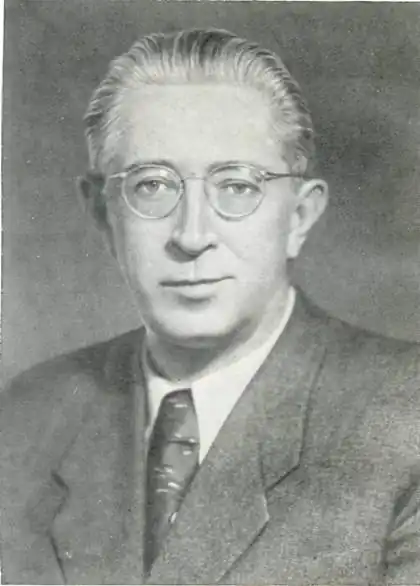

ЛАВРЕНЬОВ БОРИС АНДРІЙОВИЧ
[1891-1959], письменник, драматург
Лавреньов Борис Андрійович (справжнє прізвище – Сергєєв) народився у м. Херсоні в родині вчителів. Навчався в першій чоловічій гімназії (нині гімназія № 20, що носить ім’я письменника), а пізніше на юридичному факультеті Московського університету. Основними захопленнями Бориса Сергєєва змалку стали книжки, живопис і театр. Перші свідомі літературні роботи прийшлися на чотирнадцять років, коли під враженням лермонтовського "Демона" було написано досить розлогу за обсягом (у 1500 рядків) поему "Люцифер". Потяг до поетичної творчості не був єдиним художнім самовиявом Б. Сергєєва. Мешкаючи і навчаючись у Херсоні, він захопився живописом: писав етюди й невеличкі картини. За спогадами заслуженого художника УРСР Георгія Курнакова, будучи гімназистом, він брав уроки у відомого у місті викладача живопису Д. Іконнікова. Потім, у студентські роки, майбутній письменник брав участь як художник у виставках Херсонського товариства любителів витончених мистецтв (1915 р.). У 20-ті роки в Ташкенті вже сам навчав майстерності молодих художників. Тут же випускав карикатури у Вікнах РОСТа, подібно В. Маяковському у Москві. Лавреньов Борис Андрійович Першу поезію Б.Сергєєва було надруковано у 1911 році у херсонському журналі культури, мистецтва і науки "Весенние зори" та у газеті "Родной край". Його вірші з’являлися поруч із творами іменитих та резонансних постатей у російському модерновому мистецтві. Письменник брав участь у громадянській війні в Україні, Криму, працював у військово-журналістських виданнях Середньої Азії (на Туркестанському фронті). У 1921 році в Московському альманасі "Жатва" вперше надруковано цикл віршів під псевдонімом Б. Лавреньов. З 1923 р. письменник мешкав у Петрограді, працював у газетах та інших періодичних виданнях, друкував вірші, оповідання, публіцистичні статті, рецензії, фейлетони, а також малюнки і карикатури. У роки другої світової війни письменник добровольцем пішов на фронт, був військовим кореспондентом. Багато років був головою секції драматургів у СП СРСР. З-під пера письменника вийшло чимало нарисів, статей, оповідань про мужність та героїзм народу під час війни 1939‑1945 років: "Подвиг", "Люди большого сердца", "Генерал Петров", "Разведчик Вихров", "Возвращение", "Неукротимое сердце" тощо. Більшість оповідань написані на документальній основі. Драматургія митця представлена п’єсами: "Дым", "Кинжал", "Разлом", "Враги", "Песнь о черноморцах", "За тех, кто в море", "Лермонтов" та іншими. Окремі твори Б.А. Лавреньова відзначені високими державними нагородами. За його драматичними творами ставились спектаклі у провідних театрах країни. Б. А. Лавреньов не поривав зв’язків з Херсонщиною, відвідував рідне місто, а враження підліткових та юнацьких років, проведених письменником у Херсоні, викладені на сторінках окремих творів. В автобіографічному матеріалі "Краткая повесть о себе", написаному у 1958 році, він зазначив: " … Когда смотришь с валов на ртутный блеск медленно текущей к морю водной глади, на широкое пространство плавень, на густые заросли камыша, на седые вербы над ериками, – невольно вспоминаешь незабвенные строки: "Чуден Днепр при тихой погоде!" Возле крепости разлегся на берегу уютный, ласковый город. Обилием зелени он похож на парк, и летом, когда цветут акации, улицы засыпаны душистой шуршащей пеной опавших лепестков, по которым идешь, как по ковру. Имя города – Херсон. В этом городе я родился 17 июля 1891 года". У статті "Моему юному другу", написаній у 1957 році, письменник змалював життя Херсона початку XX століття. "Моя первая академия" – публікація, присвячена Херсонській громадській бібліотеці (тепер ОУНБ ім. Олеся Гончара), читачем якої був він у 1901-1906 роках. Картини рідного міста, живописної природи півдня України зустрічаються також у творах "Ветер", "Синее и белое", драмі "Песня о черноморцах". Б. А. Лавреньов – поет, автор оповідань, нарисів, повістей, фейлетонів, романіст, драматург, публіцист, літературний критик, мемуарист. Найбільш яскраво він виявив себе як прозаїк, самобутній талант якого розкрився у невеликих за обсягом творах. Твори Б. А. Лавреньова неодноразово екранізувалися. Одна з перших екранізацій відбулася у 1927 році. За мотивами оповідання "Звездный цвет" в Узбекистані було знято стрічку "Шакалы Равата". Знімалися художні фільми за повістями "Ветер", "Сорок первый", "Гала-Петер", "Марина". У Херсоні свято шанують пам’ять відомого земляка. В обласному краєзнавчому музеї створено літературно-меморіальний музей-квартиру, де можна побачити його особисті речі, епістолярну спадщину, етюдник, пензлі, мастихіни, фарби, олівці, акварельні та живописні роботи. Серед них – неперевершений портрет його дружини Єлизавети Лавреньової. Ім’я Лавреньова Б.А. носять гімназія № 20, обласна юнацька бібліотека, одна з вулиць Комсомольського району міста.